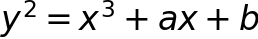

An elliptic curve is a set of points satisfying a cubic equation. Over a finite field, x and y are integers modulo a prime p. A nonzero discriminant prevents singularities. The extra point O acts as the identity.

Toy example: y² = x³ + 2x + 2 (mod 17), G = (5,1), 2G = (6,3), 3G = (10,6), and 19G = O.